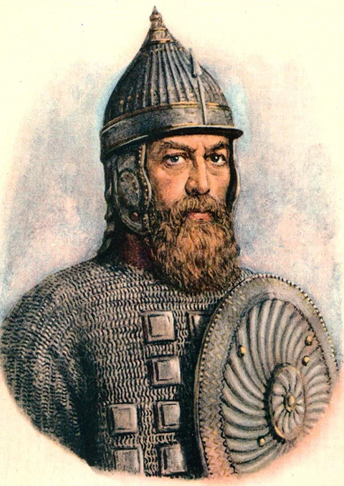
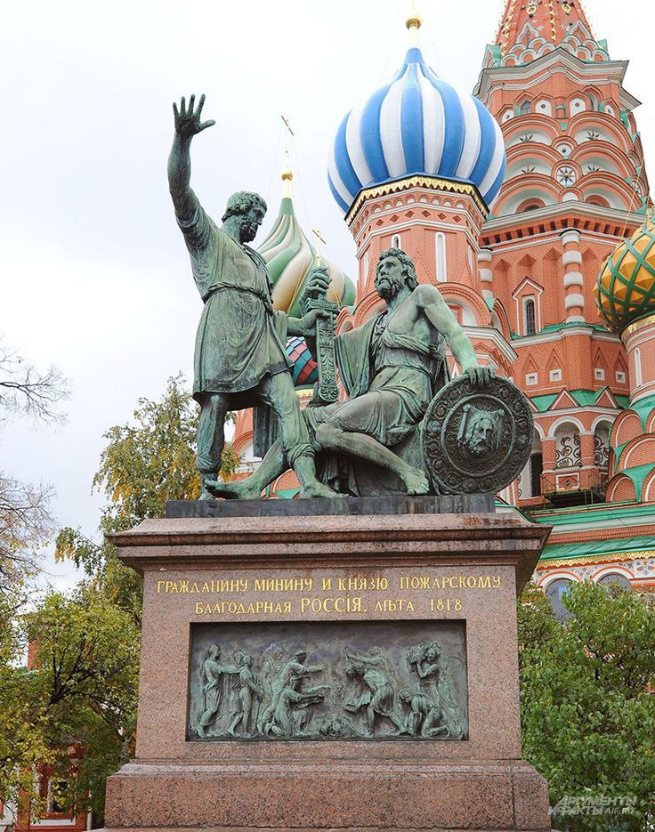
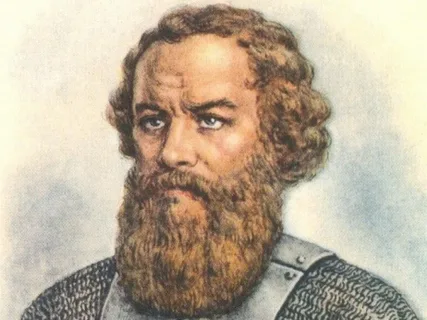

<!DOCTYPE html>
<html>
<head>
	<meta charset="utf-8">
	<meta name="viewport" content="width=device-width, initial-scale=1">
	<title>история Рустам Рахмонов 7В</title>
</head>
<body>

</body>
</html>
<style type="text/css">
	.colortext {
		color: #2b1d1d;
	}
</style>
<div style="background: #faece0; height: 4000px; font-style: italic;font-family: arial;">
	<input type="" name="" placeholder="Что будем искать?" style="height: 40px; width: 300px; margin-left: 500px;">
	<h1 class="colortext" style="margin-left: 300px;">ДМИТРИЙ ПОЖАРСКИЙ И КУПЕЦ КУЗЬМА МИНИН</h1>
	<div style="color: green; margin-left: 500px;">
		Рустам Рахмонов
	</div>
	<div style="width: 500px; margin-left: 500px; font-size: bold;" class="colortext">
		
		<p>Дмитрий Михайлович Пожарский (1578 — 1642) — это выдающийся русский князь, который зарекомендовал себя как важная фигура в период Смутного времени. Он стал национальным героем, возглавив Второе народное ополчение, благодаря которому Москва была освобождена от польско-литовских оккупантов. Пожарский проявил мужество и решительность, выступая за права народа и справедливость. Его действия и лидерство в это трудное время оставили глубокий след в истории России. Он также был известен своей честностью и великодушием, и его династия восходит к Юрию Долгорукому, основателю Москвы. Умер Пожарский 20 апреля 1642 года в Москве, оставив после себя наследие, которое почитается до сих пор.</p>
	</div>
		
	<div style="width: 800px">
		<p class="colortext" style="margin-left: 600px">Памятник Кузьме Минину и Дмитрию Пожарскому на Красной площади</p>	
	</div>
	<div style="width: 500px; margin-left: 500px; font-size: bold;" class="colortext">
		<p>Кузьма Минин — выдающийся русский общественный и политический деятель XVI-XVII веков, ставший символом мужества и патриотизма. Организатор Земского ополчения, он сыграл ключевую роль в борьбе с польско-литовскими захватчиками в Смутное время. Родился в Балахне в состоятельной семье, Минин проявил лидерские качества и мужество, возглавив Второе ополчение вместе с князем Дмитрием Пожарским. Его деятельность была направлена на восстановление порядка и защиты родины, что сделало его национальным героем для последующих поколений. В данном докладе подробно рассматриваются жизненный путь, достижения и наследие Кузьмы Минина в русской истории.</p>
		
		<p>К началу XVII в. в Российском государстве наступило так называемое Смутное время. Под именем убиенного царевича Дмитрия объявился первый русский самозванец – Гришка Отрепьев, беглый монах московского Чудова монастыря. Заговорщики убили сына Бориса Годунова, Федора, и его мать. Едва успели расправиться с Гришкой, как вместе со всяким вооруженным сбродом, явился второй самозванец – еще один Лжедмитрий. В стране разразился династический кризис. Москва лежала в руинах, многие города были разрушены и сожжены, в Угличе сломаны все мосты. Воспользовавшись бедственным положением в стране, на нее пошли войной поляки и шведы.</p>

		<p>К осени 1611 г. положение России было близко к отчаянному: поляки заняли Москву, Смоленск и другие русские города на западе. Шведы захватили все побережье Финского залива и Новгород. Вся западная часть государства оказалась фактически оккупированной. В стране процветало мародерство, организованная и обычная преступность.</p>

		<p>	В этот тяжелой для страны момент огромную роль сыграло русское духовенство. Под руководством игумена Троице-Сергиева монастыря архимандрита Дионисия, впоследствии канонизированного Русской Православной Церковью, монахи стали призывать русский народ к ополчению для того, чтобы изгнать врагов земли русской, прежде всего шляхтичей. Аналогичные воззвания и грамоты рассылал и патриарх Гермоген, множество других священников ходило по городам и деревням, призывая народ к освобождению страны. Церковное, особенно монастырское, слово имело тогда огромный авторитет. Одна из грамот патриарха Гермогена попала в Нижний Новгород, в руки земского старосты Козьмы Минина (Сухорука). Род Мининых, посадских людей, был хотя и богат, но не знатен и ничем особенным до событий Смутного времени не прославился, а значит — никаких документов, которые фиксировали бы путь этого рода в истории, не только не сохранилось, но не существовало вовсе. Принято считать Кузьму Минина выходцем из Балахны, где его отец был солепромышленником.</p>

		<p>	Призыв церкви к ополчению был им услышан, он немедленно приступил к делу и стал собирать людей. «Захотим помочь московскому государству, так не жалеть нам имения своего, не жалеть ничего, дворы продавать, жен и детей закладывать, бить челом тому, кто бы вступился за истинную православную веру и был у нас начальником». Минин собирал пожертвования, объясняя народу, куда пойдут их деньги, став практически финансовым директором ополчения.</p>

		<p>	Командующим ополчением был избран князь Дмитрий Михайлович Пожарский, принадлежавший к потомкам Рюрика. Князь верно служил и Борису Годунову, и Василию Шуйскому, и взошедшему потом на престол шестнадцатилетнему князю Михаилу Романову. Пожарский всегда занимал высокие должности, имел опыт успешного руководства несколькими военными операциями.</p>

		<p>	Именно этим двум людям предстояло сыграть центральную роль в освобождении страны от иноземных захватчиков. Вместе с Д. Пожарским Минин возглавил образованное при ополчении временное земское правительство «Совет всея Земли». Был составлен приговор о принудительном сборе со всех хозяев города и уезда «пятой деньги», т. е. пятой части имущества, приглашены в ополчение бездомные скитальцы — смольняне, и выбран в воеводы князь Дмитрий Пожарский. По его предложению Минину было поручено заведование казной ополчения. Со званием «выборного человека» простой нижегородец стал рядом с князем Пожарским — а после, под Москвой и в Москве, и с князем Трубецким — во главе ополчения и образовавшегося в нем правительства. Принимая участие во всех правительственных делах, Минин, главным образом, заведовал казной и обеспечением ратных людей необходимыми запасами и припасами и денежным жалованьем, с чем успешно справился, несмотря на трудности сборов в разоренной Смутой стране.</p>

		<p>Дмитрий Михайлович Пожарский, став во главе ополчения, олицетворял собой власть над Русской землею и возглавил «Совет всея Земли». Пожарский сыграл исключительную роль в освобождении Москвы.</p>

		<p>За зиму 1611-1612 гг. к ополченцам Нижнего Новгорода присоединились многие другие из отечественных городов и весей, недовольные засильем иноземцев. До того как идти на Москву, Пожарскому пришлось усмирить бунты в Поволжье. На это ушло все лето 1612 г. Зимой Пожарский собрал Земский Собор в Ярославле и передал ему управление всей Московской землей. На Собор прибыли представители всех сословий почти из всех русских городов, чтобы обсудить план дальнейших действий. В том числе и похода на Москву. Но вскоре стало известно, что польский король Сигизмунд уже выслал большое войско, и Пожарский решил не откладывая, сразу же выступать в поход.</p>	

		<p>22 октября 1612 г. ополчение приступом взяло Китай-город, а затем и Кремль. Поляки вынуждены были ретироваться. Минин и Пожарский в одночасье стали лидерами нации.</p>
	</div>
</div>
